ตัวอย่างภาพใหม่3แบบเพื่อทบทวนทิศทางศิลป์ ยังไม่ใช่การอนุมัติ VFX ครบ17ตัว
ภาพด้านล่างบันทึกจาก FoundationScene/Phaser ระหว่างเล่นจริงในห้อง Colyseus guest แยก ใช้ CombatSystem และการเดินจริง ไม่ใช่ภาพจากพรีวิว Canvas มอนสเตอร์ · เกาหลียังเป็นจุดเกิดทดสอบชั่วคราว · คลิกภาพเพื่อดูขนาดเต็ม
หญิงหิมะ · ลมหายใจเหมันต์
ระยะฐาน 5.2 ช่องโลก · ความเร็ว 6 ช่อง/วินาที · ยิงโดน8 / เดินหลบ8 / นอกระยะ1 ผ่าน
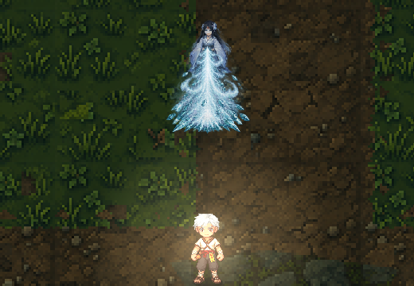
south · ภาพเฟรม 3
จุดปล่อย (96,90) บนเฟรมต้นฉบับ
ดาเมจ 896ms · ต่างภาพถึงเป้า 33ms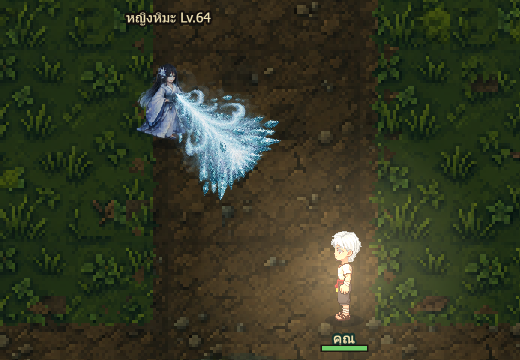
south-east · ภาพเฟรม 3
จุดปล่อย (108,85) บนเฟรมต้นฉบับ
ดาเมจ 893ms · ต่างภาพถึงเป้า 27ms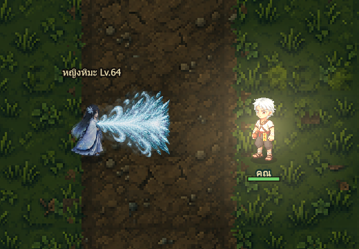
east · ภาพเฟรม 3
จุดปล่อย (107,88) บนเฟรมต้นฉบับ
ดาเมจ 896ms · ต่างภาพถึงเป้า 29ms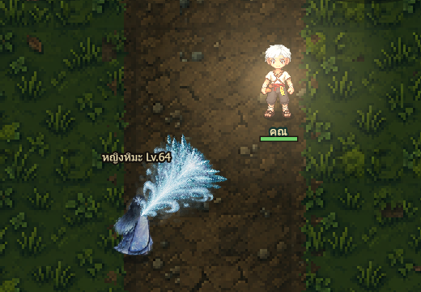
north-east · ภาพเฟรม 3
จุดปล่อย (109,87) บนเฟรมต้นฉบับ
ดาเมจ 891ms · ต่างภาพถึงเป้า 25ms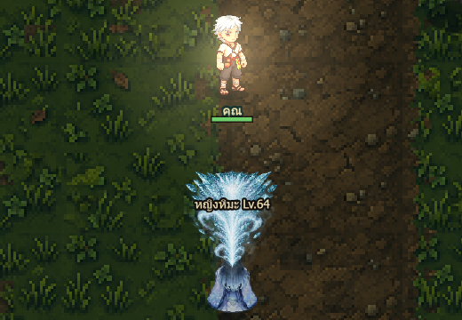
north · ภาพเฟรม 3
จุดปล่อย (96,89) บนเฟรมต้นฉบับ
ดาเมจ 891ms · ต่างภาพถึงเป้า 25ms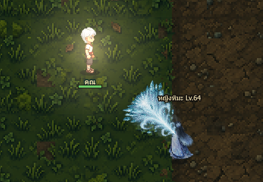
north-west · ภาพเฟรม 3
จุดปล่อย (82,88) บนเฟรมต้นฉบับ
ดาเมจ 892ms · ต่างภาพถึงเป้า 26ms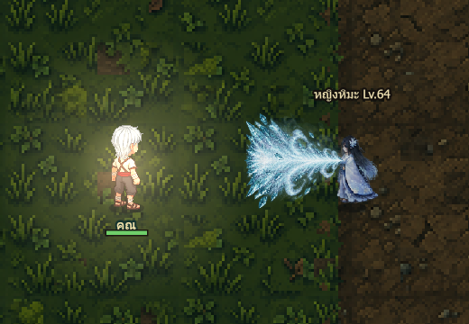
west · ภาพเฟรม 3
จุดปล่อย (84,88) บนเฟรมต้นฉบับ
ดาเมจ 892ms · ต่างภาพถึงเป้า 30ms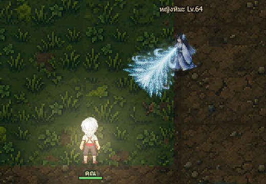
south-west · ภาพเฟรม 3
จุดปล่อย (84,85) บนเฟรมต้นฉบับ
ดาเมจ 893ms · ต่างภาพถึงเป้า 24msโวดียานอย · คลื่นน้ำขุ่น
ระยะฐาน 4.8 ช่องโลก · ความเร็ว 4.8 ช่อง/วินาที · ยิงโดน8 / เดินหลบ8 / นอกระยะ1 ผ่าน
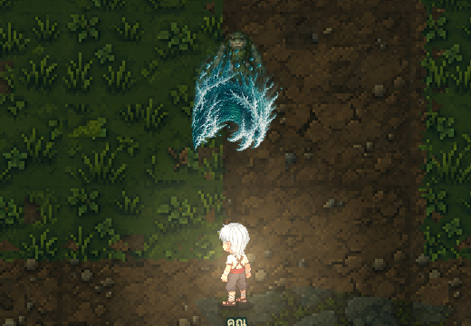
south · ภาพเฟรม 3
จุดปล่อย (96,112) บนเฟรมต้นฉบับ
ดาเมจ 1018ms · ต่างภาพถึงเป้า 20ms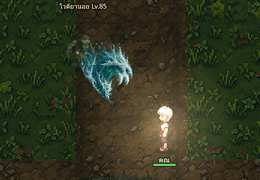
south-east · ภาพเฟรม 3
จุดปล่อย (131,118) บนเฟรมต้นฉบับ
ดาเมจ 1033ms · ต่างภาพถึงเป้า 31ms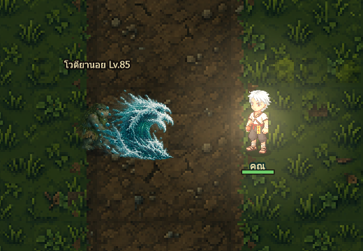
east · ภาพเฟรม 3
จุดปล่อย (113,121) บนเฟรมต้นฉบับ
ดาเมจ 1030ms · ต่างภาพถึงเป้า 33ms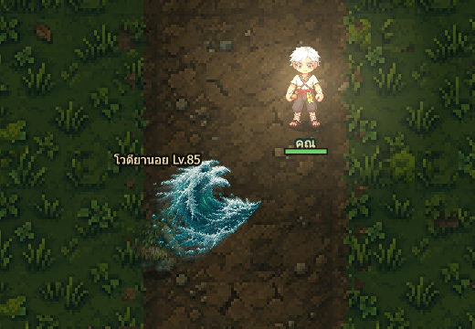
north-east · ภาพเฟรม 3
จุดปล่อย (116,119) บนเฟรมต้นฉบับ
ดาเมจ 1035ms · ต่างภาพถึงเป้า 39ms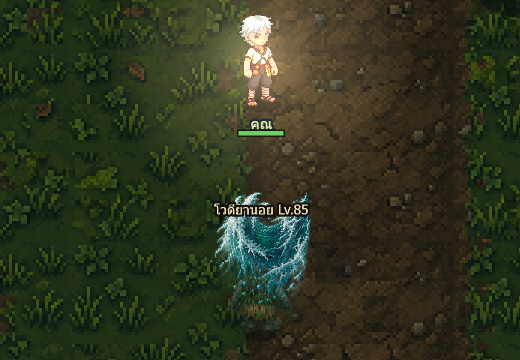
north · ภาพเฟรม 3
จุดปล่อย (96,116) บนเฟรมต้นฉบับ
ดาเมจ 1033ms · ต่างภาพถึงเป้า 33ms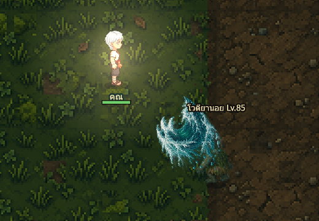
north-west · ภาพเฟรม 3
จุดปล่อย (68,117) บนเฟรมต้นฉบับ
ดาเมจ 1036ms · ต่างภาพถึงเป้า 40ms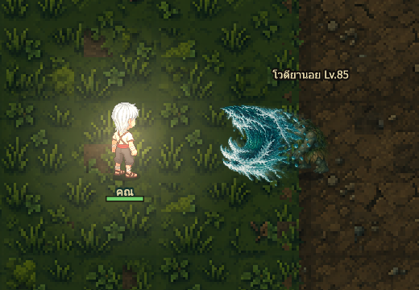
west · ภาพเฟรม 3
จุดปล่อย (71,120) บนเฟรมต้นฉบับ
ดาเมจ 1032ms · ต่างภาพถึงเป้า 33ms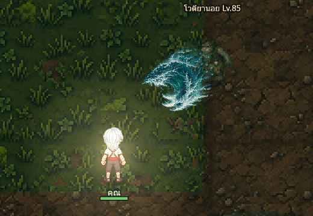
south-west · ภาพเฟรม 3
จุดปล่อย (69,114) บนเฟรมต้นฉบับ
ดาเมจ 1033ms · ต่างภาพถึงเป้า 31msเซนดิง · เส้นคำสาปส่งวิญญาณ
ระยะฐาน 6.4 ช่องโลก · ความเร็ว 8.5 ช่อง/วินาที · ยิงโดน8 / เดินหลบ8 / นอกระยะ1 ผ่าน
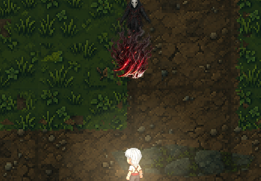
south · ภาพเฟรม 3
จุดปล่อย (92,87) บนเฟรมต้นฉบับ
ดาเมจ 797ms · ต่างภาพถึงเป้า 41ms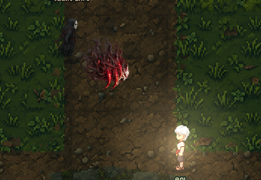
south-east · ภาพเฟรม 3
จุดปล่อย (136,88) บนเฟรมต้นฉบับ
ดาเมจ 800ms · ต่างภาพถึงเป้า 47ms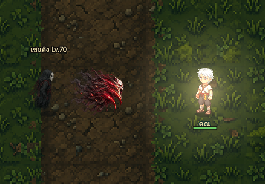
east · ภาพเฟรม 3
จุดปล่อย (146,110) บนเฟรมต้นฉบับ
ดาเมจ 790ms · ต่างภาพถึงเป้า 41ms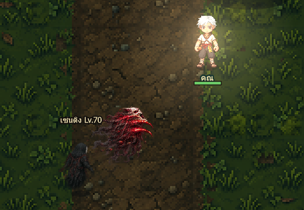
north-east · ภาพเฟรม 3
จุดปล่อย (150,109) บนเฟรมต้นฉบับ
ดาเมจ 799ms · ต่างภาพถึงเป้า 48ms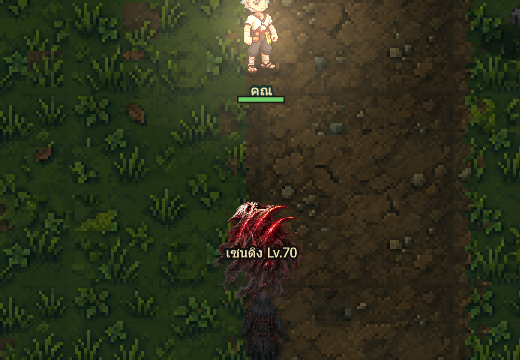
north · ภาพเฟรม 3
จุดปล่อย (112,104) บนเฟรมต้นฉบับ
ดาเมจ 800ms · ต่างภาพถึงเป้า 45ms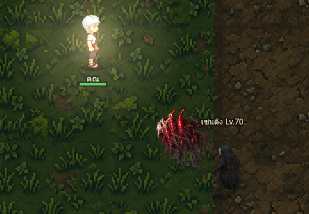
north-west · ภาพเฟรม 3
จุดปล่อย (101,111) บนเฟรมต้นฉบับ
ดาเมจ 800ms · ต่างภาพถึงเป้า 47ms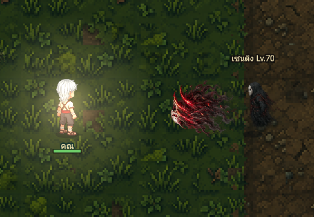
west · ภาพเฟรม 3
จุดปล่อย (101,111) บนเฟรมต้นฉบับ
ดาเมจ 795ms · ต่างภาพถึงเป้า 40ms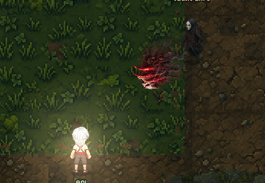
south-west · ภาพเฟรม 3
จุดปล่อย (94,87) บนเฟรมต้นฉบับ
ดาเมจ 798ms · ต่างภาพถึงเป้า 44ms